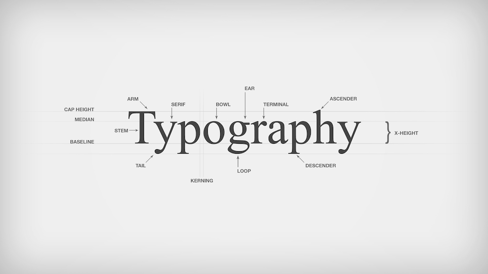

Overview.
The Anatomy of Typography
Typography is more than just selecting a font—it is an intricate design system with distinct parts that contribute to the readability and aesthetic of text. Understanding the anatomy of typography helps designers make informed choices when working with typefaces. Understanding typography anatomy is crucial for graphic designers, UI/UX designers, and typographers because it improves readability and legibility, it helps in selecting and pairing fonts effectively, enhances aesthetics and brand identity, and ensures accessibility and usability in digital and print media. The following image shows the Anatomy of Typography:
Image source:
Marek SzkudlarekTypography is the art and technique of arranging text to make written language legible, readable, and visually appealing. It involves choosing typefaces, font sizes, spacing, and layout to enhance design and communication. Typography plays a crucial role in branding, web design, publishing, and advertising.
There are many different terms used in Typography. This is a list of some of the most common terms:
10 Key Typography Terms:
1- Typeface.
- Typeface is a family of fonts that share a common design (e.g., Arial, Times New Roman).
- Typefaces are used in print and digital media to display text, numbers, symbols, and punctuation. See image below:
2- Font.
- Distinct from a typeface, a font refers to a specific weight, size, and style within a typeface family.
- Weight: Refers to the thickness of the stroke of a font, essentially how bold or thin the letter appears, ranging from very light (hairline) to very heavy (black).
- Size: A font is typically measured in a point (pt) size, which is the vertical measurement of the lettering. There are approximately 72 (72.272) points in one inch or 2.54 cm.
- Style: The "style" of a font typeface refers to its overall design characteristics, which can be categorized into different families like serif, sans-serif, etc.
3- Serif.
- A typeface with small decorative strokes (serif) at the ends of letters (e.g., Times New Roman).
- Times New Roman is a serif typeface that was designed by Stanley Morison and Victor Lardent for the British newspaper The Times in 1931. It's one of the most popular typefaces in the world
- Serif fonts are often used for books, magazines, and newspapers because they are easy to read in long-form text.
- Here are some examples of Serif Typefaces. Notice the decorative strokes and their thickness:
4- Sans-serif.
- Sans-serif typefaces, characterized by their clean and unadorned style without “feet”, often used for modern and digital designs.
- Some popular sans serif typefaces include Helvetica, Futura, Arial, Open Sans, and Roboto.
5- Kerning.
- Kerning is the adjustment of space between individual characters to inprove readability.
- Here are some examples of Kerning:
6- Leading.
- Leading it refers to the gap between lines of text, affecting how text flows.
7- Tracking.
- This is the process of uniformly adjusting the horizontal space between all characters within a block of text, allowing designers to tighten or loosen the spacing to achieve a desired visual aesthetic and readability.
8- Baseline.
- The invisible line on which most letters sit, serving as a reference point to ensure consistent vertical alignment and spacing between lines of text.
9- X-Height.
- In typography, "x-height" refers to the vertical height of a lowercase "x" in a typeface, essentially representing the height of the main body of lowercase letters without ascenders or descenders.
10- Hierarchy.
- The main purpose of typography hierarchy is to arrange text to highlight the importance of information. Without a typographic hierarchy, every letter, every word, and sentence in a design would look the same..
- The following image illustrates how hierarchy is applied in different forms.
Image source:
Selah Creative Co.